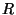

The simplest measure of variation for a one variable data set is the range. This is denoted by  for both a population and a sample. The range is defined as the difference between the largest value in a set of data and the smallest value. That is ;
Suppose that in a sample of pediatric weights the largest weight was 188 and the smallest weight was 111. It follows that the range was R = (188 - 111) = 77.
Clearly the larger the range the more dispersed the data is. However the range does not provide a great deal of information and therefore a more powerful and useful measure is used.
The most commonly used measure of variation and the one from which the most information can be obtained is the standard deviation (see standard deviation).
Based on the empirical rule ( and the normal distribution) it occurs that for most large samples the
sample range is between four and six times the magnitude of the standard deviation  (see
standard deviaiton). That is for a large sample most of the time we would have
(see
standard deviaiton). That is for a large sample most of the time we would have
This gives a convenient method for determining a rough estimate of the size of  for a large
sample. We illustrate this from a collection of pediatric weights.
for a large
sample. We illustrate this from a collection of pediatric weights.
EXAMPLE
Consider 60 pediatric weights which have a range of . The
standard deviation would then be estimated as being between
 and
and